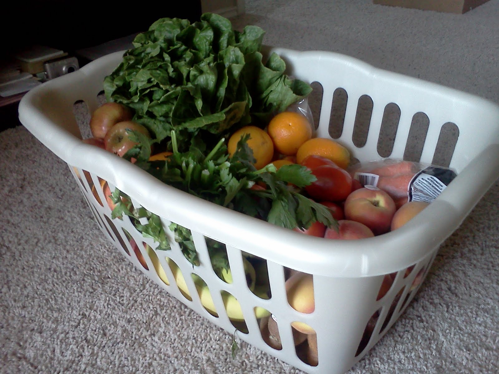
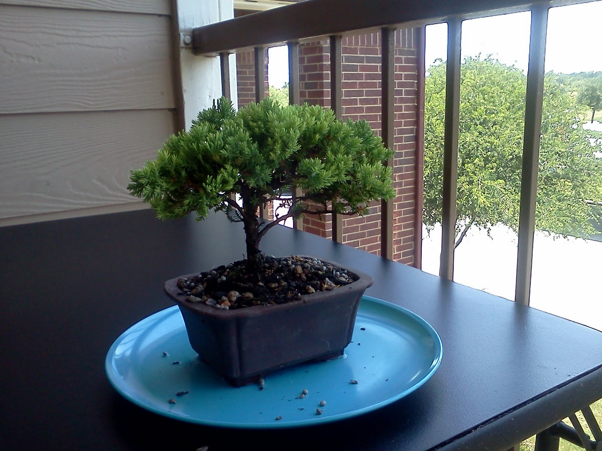

Bountiful Baskets and a Bonzai Tree.
First off, I just want to point out that I have a really hard time not updating this blog every single day, multiple times a day. This is a serious study in self control for me. But fear not! Eventually I'll calm down and post only, like, once a week. Until then, READ EVERYTHING I PUT OUT, I DEMAND IT!!! That is all.
So we've started doing bountiful baskets again. Basically it's awesome. We place our order Monday night and pick up the basket on Saturday morning. For more info, go here. Bountiful Baskets is a co-op that we participated in in Utah, and now also in Texas, we were so excited to find out they did it here. In Utah it was basically run by the Fire Dept, as any excess foodstuffs were donated to the Fire Dept, which was cool. Here, I'm pretty sure it's just run by a bunch of mormons, which is less cool, but still, pretty cool. Anyways, point is, we get a lot of good produce for not a lot of money. This week, $15 got us this:
This consists of:
Also this week, Catherine bought me a Bonsai tree!! YAY!! I've always wanted one, and she got me one! It is actually a miniature Green Mound Juniper, and is an outside Bonsai. Did you know that "Bonsai" is not actually a type of tree, but a type of art form? Anyways, here's my Juniper Bonsai:
Yay!
So we've started doing bountiful baskets again. Basically it's awesome. We place our order Monday night and pick up the basket on Saturday morning. For more info, go here. Bountiful Baskets is a co-op that we participated in in Utah, and now also in Texas, we were so excited to find out they did it here. In Utah it was basically run by the Fire Dept, as any excess foodstuffs were donated to the Fire Dept, which was cool. Here, I'm pretty sure it's just run by a bunch of mormons, which is less cool, but still, pretty cool. Anyways, point is, we get a lot of good produce for not a lot of money. This week, $15 got us this:
{kind=link}

This consists of:
- 1 Head of Romaine Lettuce
- 1 Bunch of Celery
- 1 Cantaloupe
- 1 Bunch of Bananas (did you know that bananas are slightly radioactive?)
- 1 Bag of Carrots
- 8 Plum Tomatoes
- 5 Fuji Apples
- 7 small Oranges
- 2 Zucchini
- 2 Cucumbers
- 7 Peaches
- 1lbs of Strawberries
- 5 Kiwis
Also this week, Catherine bought me a Bonsai tree!! YAY!! I've always wanted one, and she got me one! It is actually a miniature Green Mound Juniper, and is an outside Bonsai. Did you know that "Bonsai" is not actually a type of tree, but a type of art form? Anyways, here's my Juniper Bonsai:
{kind=link}

Yay!